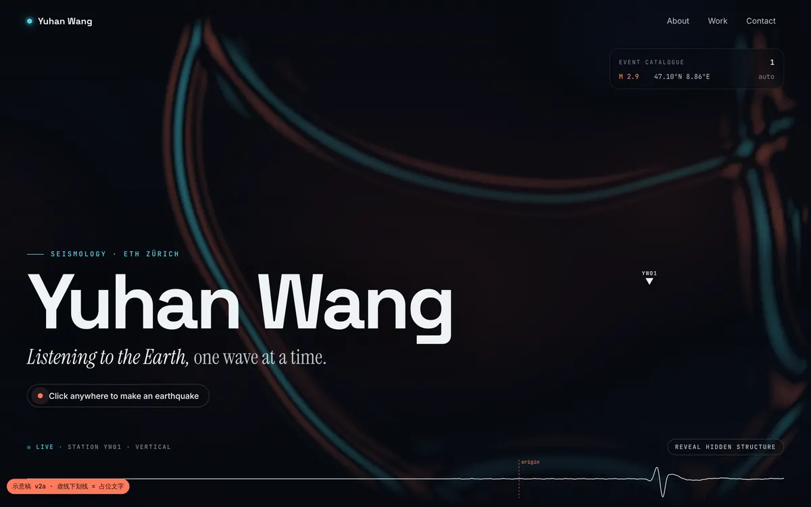
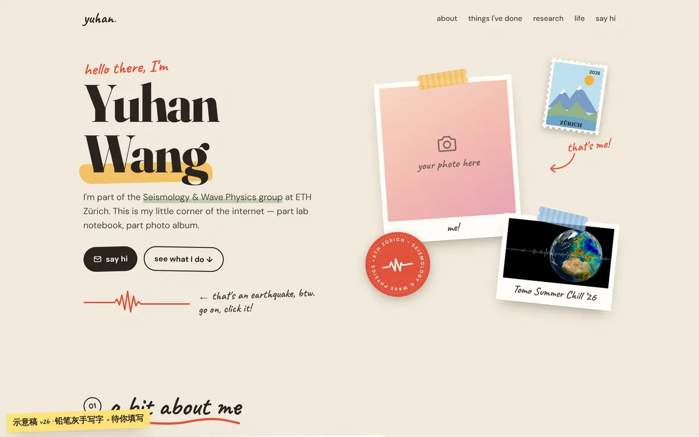
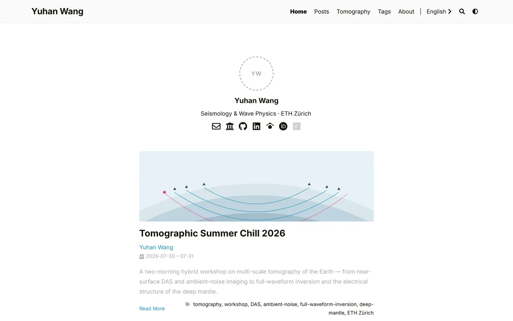

Yuhan Wang · homepage drafts
几个方向都放在这里，可以直接点开试玩（手机上也可以）。选定之后，这个页面会换成正式主页，草稿目录随之删除。

实时二维波动方程：点哪里，哪里就"发生地震"；台站 YW01 实时记录地震图，还能揭示隐藏的速度结构。

纸张、拍立得、胶带、便利贴；研讨会是一张票根，联系方式是一张明信片，学术链接做成贴纸。

复刻 kaichu.io（Hugo LoveIt 主题）的结构：顶栏导航、Posts 归档、标签云、About、带目录的文章页、站内搜索、明暗切换。